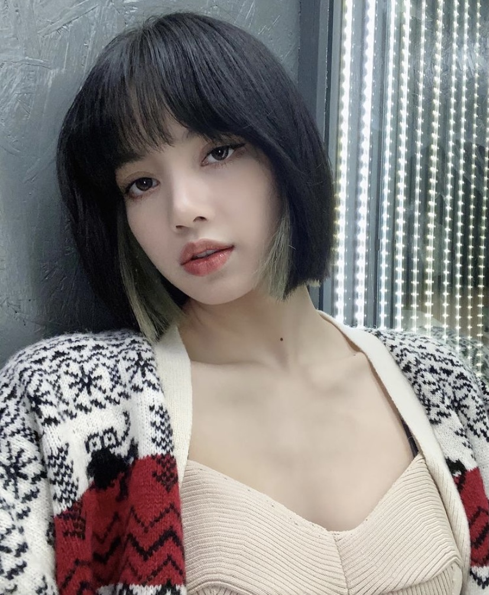
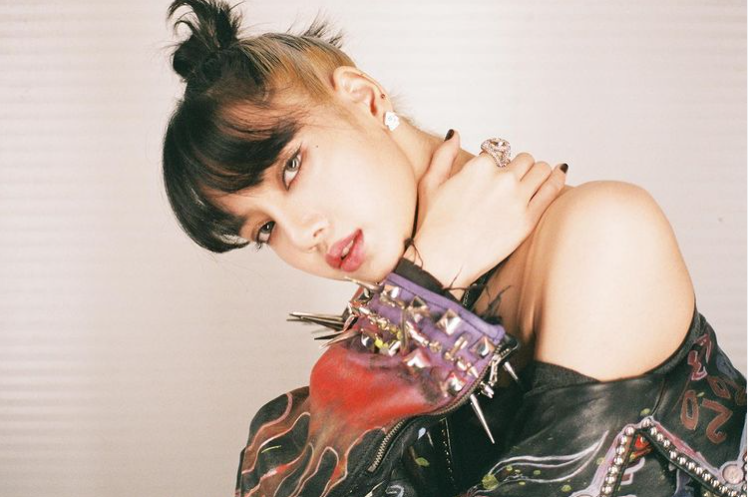
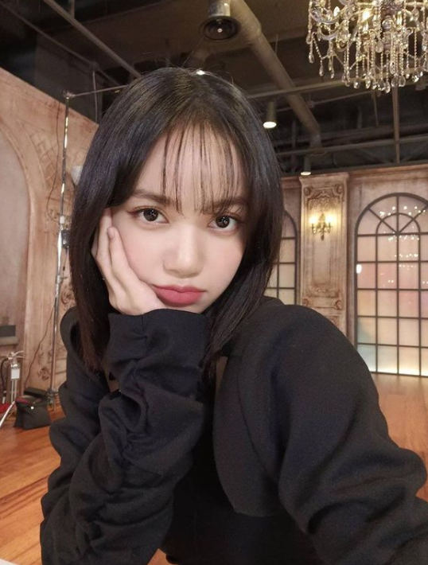

Lalisa Monoban



Stage name: Lisa
Birth name: Lalisa Monoban
Nicknames: Lili, Lalice, Laliz
Position: Main dancer, Lead rapper
Birthday: March 27, 1997
Zodiac sign: Aries
Birthplace: Buriram, Thailand
Height: 5'5.6" (166.5 cm)
Instgram: @lalalalisa_m
Weibo: lalalalisa_m
YouTube: Lilifilm
Facts:
- She was born in Buriram Province and moved to Bangkok at age three
- She can play guitar, piano, and ukulele
- Her stepfather is Marco Brueschweiler who is a top certified Swiss chef
- She was the only person accepted into YG at the audition in Thailand
- She is childhood friends with GOT7's BamBam
- She trained for 5 years and 3 months
- She has 5 cats: Leom Luca, Lily, Louis, and Lego
- She became a trainee in middle school and has lived in Korea since
- She was the second member to be revealed
- She can speack Thai, Korean, English, Japanese, and basic Chinese
- The other members of BlackPink sat that she is really playful and mischievous off stage
- She was the dance mentor on Youth with You season 2 and season 3.